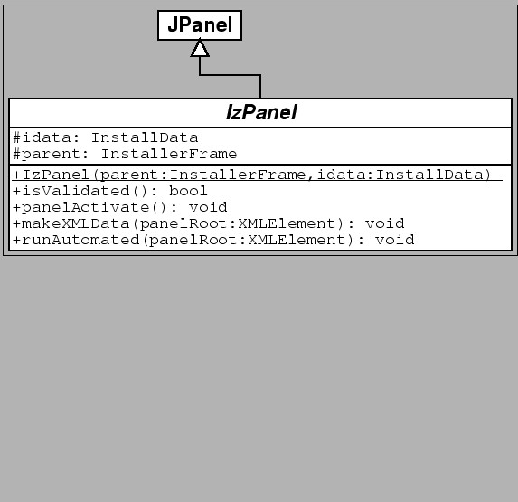

Next: User Input
Up: izpack-doc
Previous: Desktop Shortcuts
Contents
Subsections
First you have to read the NanoXML documentation if you need to use XML
in your panel. Secondly, it is necessary that you use the
Javadoc-generated class references. We will just explain here briefly
how to start making your panels.
It is a good idea to read the source code of some IzPack panels. They
are usually very small, which makes it easier to understand how
to write your own.
Extending IZPACK with a panel is quite simple. A panel used with
IZPACK must be a subclass of IzPanel. The IzPanel
class is located in the com.izforge.izpack.installer package
but your panels need to belong to com.izforge.izpack.panels.
Things will get a good deal easier if you build IzPack with Jakarta Ant.
Simply add your class in the source tree and add the And directives to
build your own panels. In this way you'll be able to focus on your code
:-)

The two data members are : the install data (refer to the InstallData
Javadoc reference) and a reference to the parent installer frame.
The methods have the following functionality :
- (constructor) : called just after the language
selection dialog. All the panels are constructed at this time and then
the installer is shown. So be aware of the fact that the installer
window is not yet visible when the panel is created. If you
need to do some work when the window is created, it is in most cases
better do it in panelActivate.
- isValidated returns true if the user is
allowed to go a step further in the installation process. Returning
false will lock it. For instance the LicencePanel returns
true only if the user has agreed with the license agreement.
The default is to return true.
- panelActivate is called when the panel becomes active.
This is the best place for most initialization tasks. The default is
to do nothing.
- makeXMLData is called to build the automated installer
data. The default is to do nothing. panelRoot refers to the
node in the XML tree where you can save your data. Each panel is given
a node. You can organize it as you want with the markups you want
starting from panelRoot. It's that simple.
- runAutomated is called by an automated-mode
installation. Each panel is called and can do its job by picking the
data collected during a previous installation as saved in
panelRoot by makeXMLData.
Next: User Input
Up: izpack-doc
Previous: Desktop Shortcuts
Contents
2004-06-05